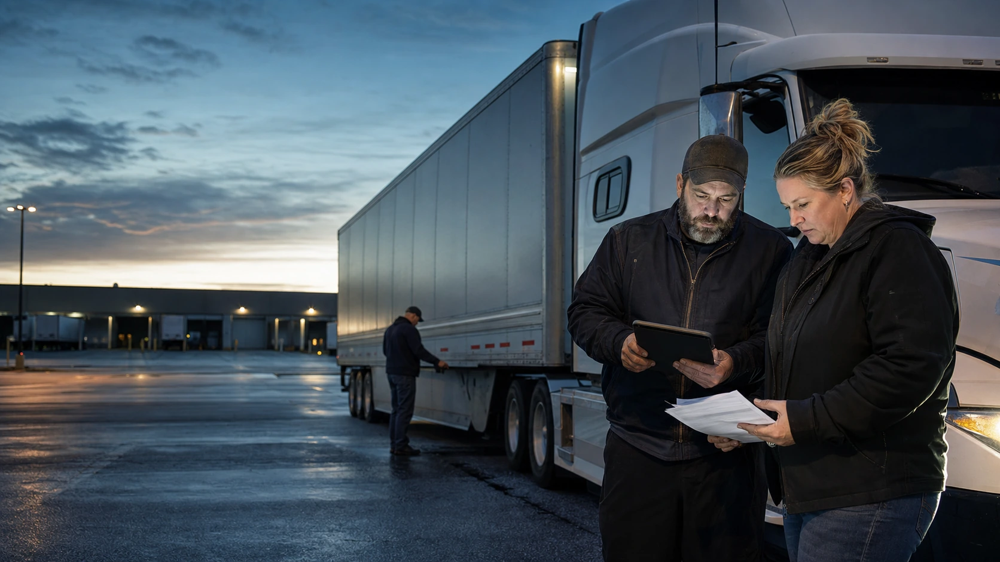

One release state
Ready, watch, and hold make the operational decision visible without hiding the reason in email, folders, or staff memory.

For-hire fleets
BOF gives for-hire teams one accountable record for driver and carrier readiness, load documents, release decisions, delivery proof, billing packets, settlement exceptions, and the next action that keeps customer freight moving.
Ready, watch, and hold make the operational decision visible without hiding the reason in email, folders, or staff memory.
Rate confirmation, BOL, driver and carrier checks, POD, receipts, photos, claim evidence, and packet status stay connected to the operating record.
Every unresolved record names what is missing, who owns the follow-up, what clears it, and what happens if it remains open.
Customer-freight record
For-hire operations carry customer, driver, carrier, document, timing, proof, billing, and settlement pressure at the same time. BOF keeps those questions connected without pretending to replace the responsible operating team.
Capture customer context, origin and destination, timing, rate-confirmation details, assigned parties, and the proof expected at delivery.
Check driver, carrier, equipment, credentials, insurance evidence, and known exceptions against the work being assigned.
Connect BOL, release instructions, signatures, receipts, photos, POD, and other packet evidence to ready, watch, or hold.
Keep delivery evidence, detention or lumper support, claim items, billing packet, settlement exception, owner, and next action visible.
Qualification
BOF organizes operating evidence and follow-through. The fleet retains the authority and professional responsibilities attached to the work.
For-hire working session
BOF will map the decision, supporting record, blocker, owner, clearance condition, and next action around the freight your team already has to manage.